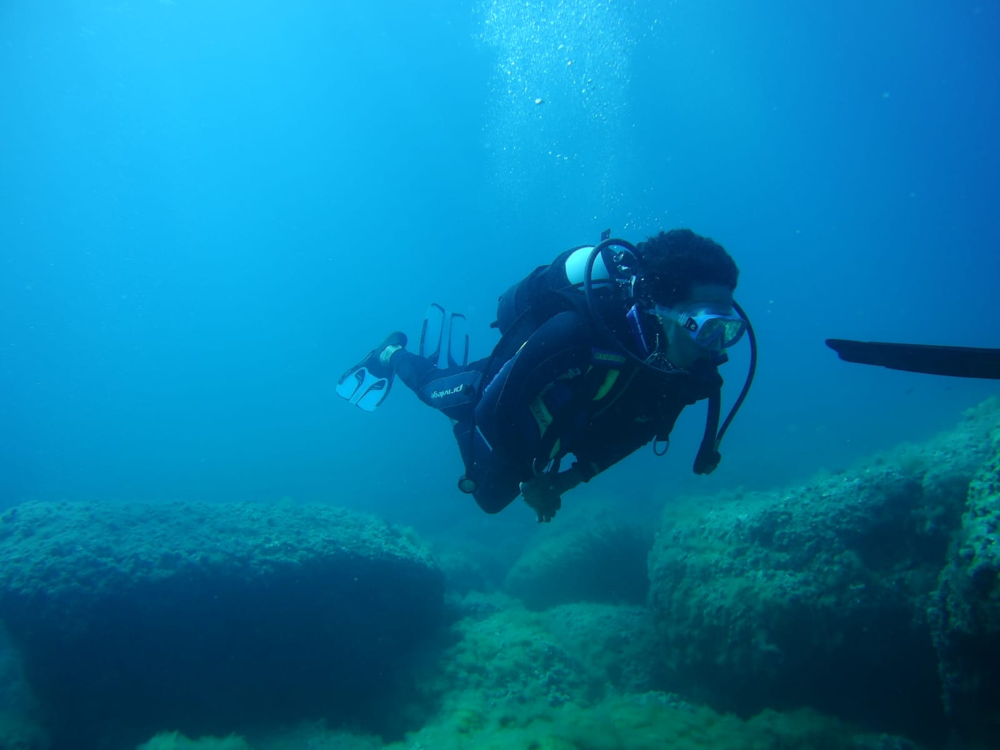
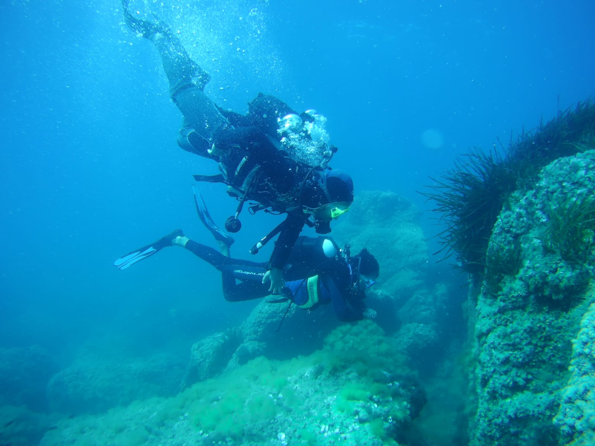
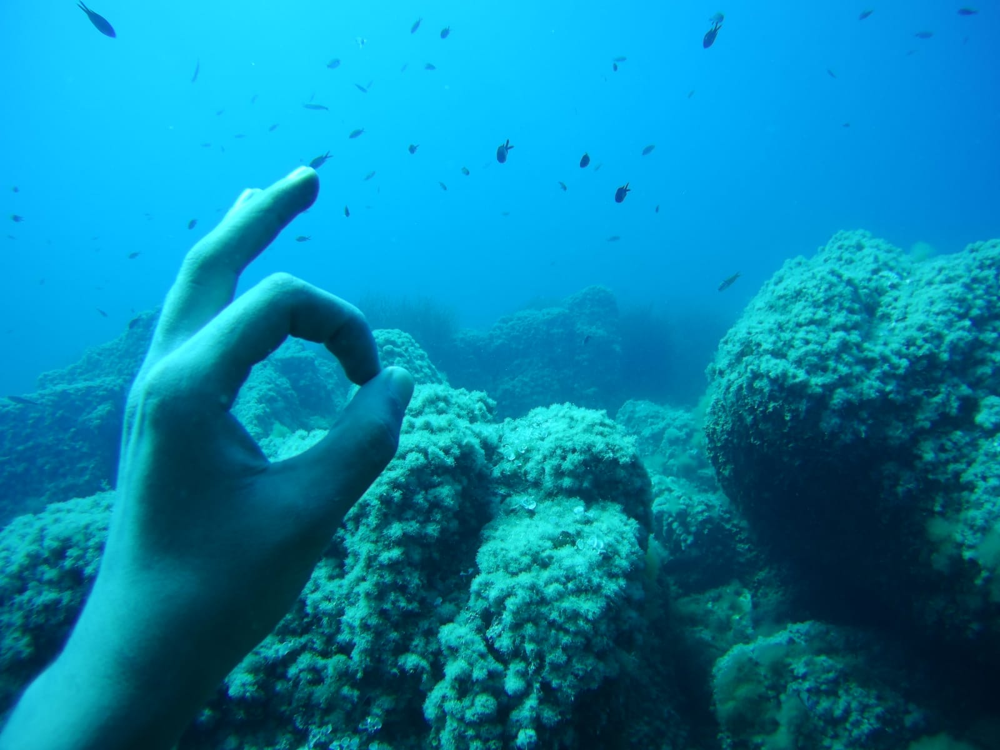
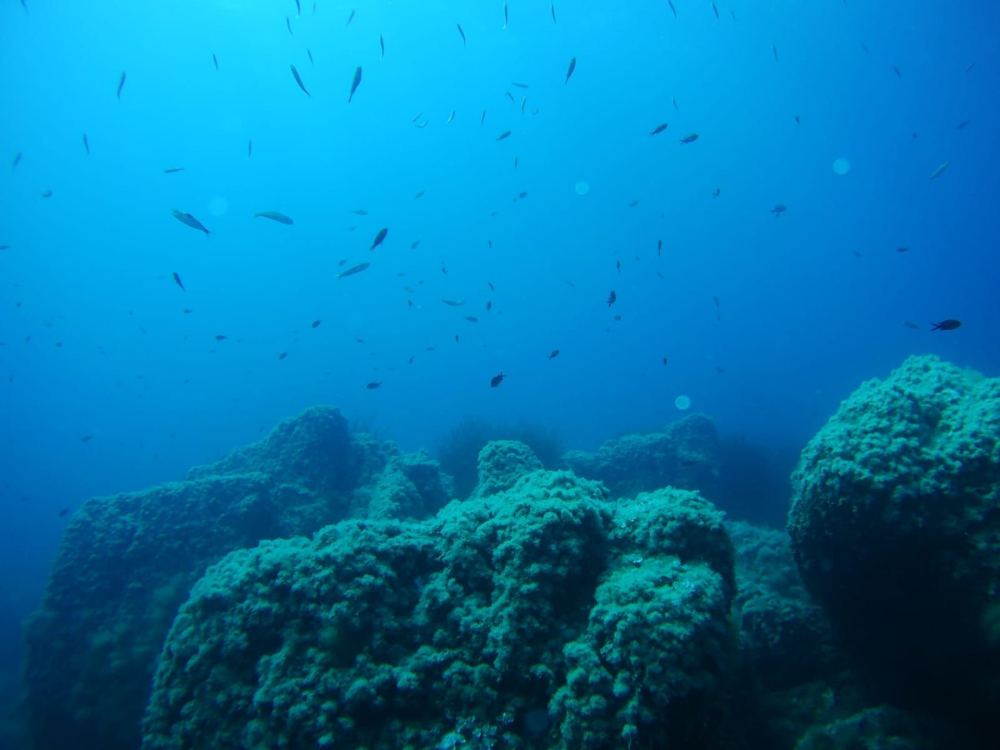
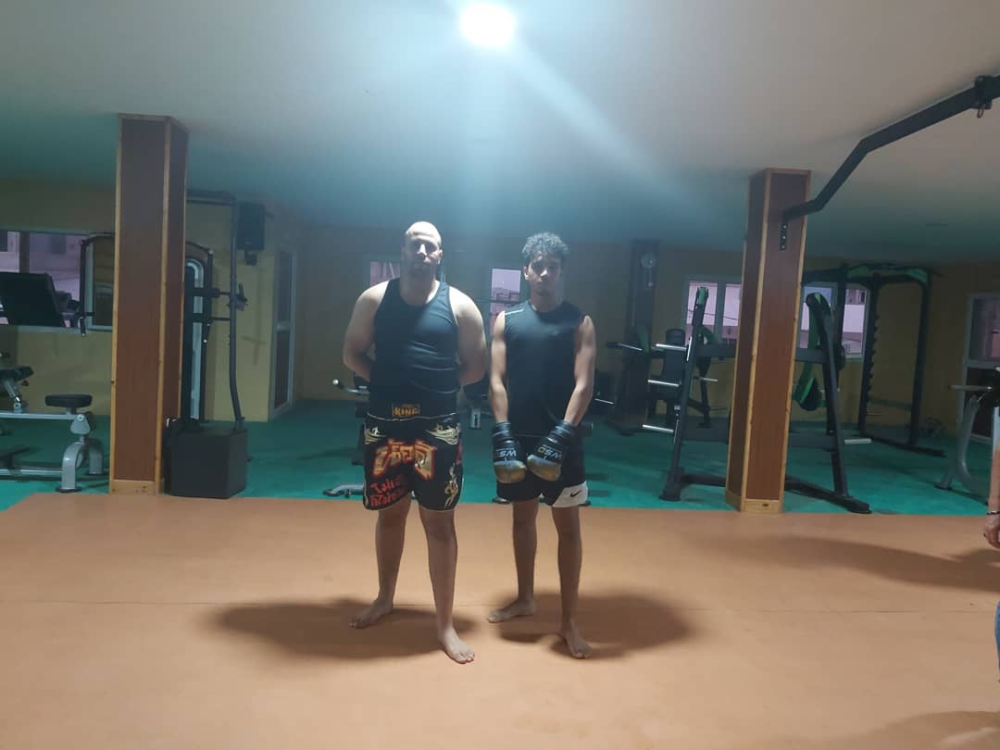

Diving C'est l'une des milleures activités sportives que je l'ai pratiqué. Le planger te permet de de découvrir le monde sous-marin :     Boxing Le sport qui me permet de degager tout l'energie negative: 